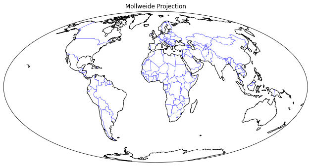
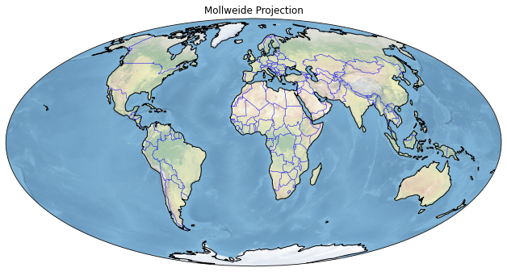
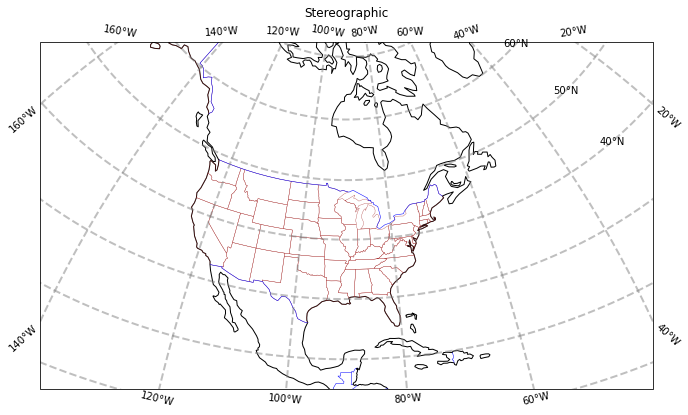
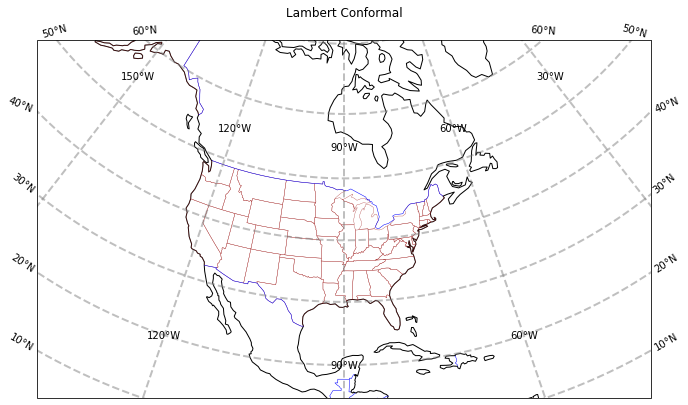

01_Cartopy_Introduction¶
In this notebook, we’ll cover the following:¶
Extend Matplotlib’s
axesinto georeferencedGeoAxesCreate a map with a specified projection and add various cartographic features to it.
Explore some of Cartopy’s map projections
Create regional maps
0) Preliminaries¶
import matplotlib.pyplot as plt
from cartopy import crs as ccrs, feature as cfeature
1) Extend Matplotlib’s axes into georeferenced GeoAxes¶
Recall that in Matplotlib, what we might tradtionally term a figure consists of two key components: a figure and an associated subplot axes instance.¶
By virtue of importing Cartopy, we can now convert the axes into a GeoAxes by specifying a projection that we have imported from Cartopy’s Coordinate Reference System class as ccrs. This will effectively georeference the subplot.¶
2) Create a map with a specified projection and add various cartographic features to it.¶
Full list of projections in Cartopy: https://scitools.org.uk/cartopy/docs/latest/crs/projections.html¶
fig = plt.figure(figsize=(11, 8.5))
# Create a GeoAxes that uses the PlateCarree projection
# (basically a global lat-lon map projection, which translates from French to "flat square" in English,
# where each point is equally spaced in terms of degrees)
ax = plt.subplot(1, 1, 1, projection=ccrs.PlateCarree(central_longitude=-75))
ax.set_title("A Geo-referenced subplot, Plate Carree projection")
# adding a trailing semicolon to the last line prevents output from the deployed axes method from appearing
Text(0.5, 1.0, 'A Geo-referenced subplot, Plate Carree projection')
Although the figure seems empty, it has in fact been georeferenced, using one of Cartopy’s map projections that is provided by Cartopy’s crs (coordinate reference system) class. We can now add in cartographic features, in the form of shapefiles, to our subplot. One of them is coastlines, which is a callable GeoAxes method that can be plotted directly on our subplot.¶
ax.coastlines()
<cartopy.mpl.feature_artist.FeatureArtist at 0x7f16d88c6ca0>
When using the `%matplotlib inline` notebook magic, to get the figure to display again with the features that we've added since the original display, just type the name of the Figure object in its own cell.
fig
/usr/share/miniconda/envs/pythia-book-dev/lib/python3.8/site-packages/cartopy/io/__init__.py:241: DownloadWarning: Downloading: https://naciscdn.org/naturalearth/110m/physical/ne_110m_coastline.zip
warnings.warn('Downloading: {}'.format(url), DownloadWarning)
Cartopy provides other cartographic features via its features class, which we’ve imported as cfeature. These are also shapefiles, downloaded on initial request from http://www.naturalearthdata.com/ . Once downloaded, they “live” in your ~/.local/share/cartopy directory.¶
We add them to our subplot via the add_feature method. We can define attributes for them in a manner similar to Matplotlib’s plot method. A list of the various Natural Earth shapefiles appears in https://scitools.org.uk/cartopy/docs/latest/matplotlib/feature_interface.html .¶
ax.add_feature(cfeature.BORDERS, linewidth=0.5, edgecolor='black')
ax.add_feature(cfeature.STATES, linewidth=0.3, edgecolor='brown')
<cartopy.mpl.feature_artist.FeatureArtist at 0x7f16cb542dc0>
Once again, referencing the Figure object will re-render the figure in the notebook, now including the two features
fig
/usr/share/miniconda/envs/pythia-book-dev/lib/python3.8/site-packages/cartopy/io/__init__.py:241: DownloadWarning: Downloading: https://naciscdn.org/naturalearth/110m/cultural/ne_110m_admin_0_boundary_lines_land.zip
warnings.warn('Downloading: {}'.format(url), DownloadWarning)
/usr/share/miniconda/envs/pythia-book-dev/lib/python3.8/site-packages/cartopy/io/__init__.py:241: DownloadWarning: Downloading: https://naciscdn.org/naturalearth/110m/cultural/ne_110m_admin_1_states_provinces_lakes.zip
warnings.warn('Downloading: {}'.format(url), DownloadWarning)

3) Explore some of Cartopy’s map projections¶
You can find a list of supported projections in Cartopy, with examples, at https://scitools.org.uk/cartopy/docs/latest/crs/projections.html
Mollweide Projection (often used with global satellite mosaics)¶
This time, we’ll define an object to store our projection definition. Any time we wish to use this particular projection later in the notebook, we can use the object name rather than repeating the same call to ccrs.¶
fig = plt.figure(figsize=(11, 8.5))
projMoll = ccrs.Mollweide(central_longitude=0)
ax = plt.subplot(1, 1, 1, projection=projMoll)
ax.set_title("Mollweide Projection")
Text(0.5, 1.0, 'Mollweide Projection')
# Add in the cartographic shapefiles
ax.coastlines()
ax.add_feature(cfeature.BORDERS, linewidth=0.5, edgecolor='blue')
fig

Add a fancy background image to the map.¶
ax.stock_img()
fig

Lambert Azimuthal Equal Area Projection¶
fig = plt.figure(figsize=(11, 8.5))
projLae = ccrs.LambertAzimuthalEqualArea(central_longitude=0.0, central_latitude=0.0)
ax = plt.subplot(1, 1, 1, projection=projLae)
ax.set_title("Lambert Azimuthal Equal Area Projection")
ax.coastlines()
ax.add_feature(cfeature.BORDERS, linewidth=0.5, edgecolor='blue')
<cartopy.mpl.feature_artist.FeatureArtist at 0x7f16c939f3a0>
4) Create regional maps¶
Now, let’s go back to PlateCarree, but let’s use Cartopy’s set_extent method to restrict the map coverage to a North American view. Let’s also choose a lower resolution for coastlines, just to illustrate how one can specify that. Plot lat/lon lines as well.¶
Reference for Natural Earth’s three resolutions (10m, 50m, 110m; higher is coarser): http://www.naturalearthdata.com/downloads/¶
projPC = ccrs.PlateCarree()
lonW = -140
lonE = -40
latS = 15
latN = 65
cLat = (latN + latS) / 2
cLon = (lonW + lonE) / 2
res = '110m'
fig = plt.figure(figsize=(11, 8.5))
ax = plt.subplot(1, 1, 1, projection=projPC)
ax.set_title('Plate Carree')
gl = ax.gridlines(
draw_labels=True, linewidth=2, color='gray', alpha=0.5, linestyle='--'
)
ax.set_extent([lonW, lonE, latS, latN], crs=projPC)
ax.coastlines(resolution=res, color='black')
ax.add_feature(cfeature.STATES, linewidth=0.3, edgecolor='brown')
ax.add_feature(cfeature.BORDERS, linewidth=0.5, edgecolor='blue')
<cartopy.mpl.feature_artist.FeatureArtist at 0x7f16c9324790>
/usr/share/miniconda/envs/pythia-book-dev/lib/python3.8/site-packages/cartopy/io/__init__.py:241: DownloadWarning: Downloading: https://naciscdn.org/naturalearth/50m/cultural/ne_50m_admin_1_states_provinces_lakes.zip
warnings.warn('Downloading: {}'.format(url), DownloadWarning)
/usr/share/miniconda/envs/pythia-book-dev/lib/python3.8/site-packages/cartopy/io/__init__.py:241: DownloadWarning: Downloading: https://naciscdn.org/naturalearth/50m/cultural/ne_50m_admin_0_boundary_lines_land.zip
warnings.warn('Downloading: {}'.format(url), DownloadWarning)
Did you notice the output above the map about cartopy.mpl.feature_artist? We can eliminate that in one of two ways:¶
Use a generic object name,
_, to assign that last feature to.Add a semicolon at the end of the last line in the cell.
Note the in the `set_extent` call, we specified PlateCarree. This ensures that the values we passed into `set_extent` will be transformed from degrees into the values appropriate for the projection we use for the map.
The PlateCarree projection exaggerates the spatial extent of regions closer to the poles. Let’s try a couple different projections.¶
projStr = ccrs.Stereographic(central_longitude=cLon, central_latitude=cLat)
fig = plt.figure(figsize=(11, 8.5))
ax = plt.subplot(1, 1, 1, projection=projStr)
ax.set_title('Stereographic')
gl = ax.gridlines(
draw_labels=True, linewidth=2, color='gray', alpha=0.5, linestyle='--'
)
ax.set_extent([lonW, lonE, latS, latN], crs=projPC)
ax.coastlines(resolution=res, color='black')
ax.add_feature(cfeature.STATES, linewidth=0.3, edgecolor='brown')
# Use generic object name to suppress text output to the screen
_ = ax.add_feature(cfeature.BORDERS, linewidth=0.5, edgecolor='blue')

projLcc = ccrs.LambertConformal(central_longitude=cLon, central_latitude=cLat)
fig = plt.figure(figsize=(11, 8.5))
ax = plt.subplot(1, 1, 1, projection=projLcc)
ax.set_title('Lambert Conformal')
gl = ax.gridlines(
draw_labels=True, linewidth=2, color='gray', alpha=0.5, linestyle='--'
)
ax.set_extent([lonW, lonE, latS, latN], crs=projPC)
ax.coastlines(resolution='110m', color='black')
ax.add_feature(cfeature.STATES, linewidth=0.3, edgecolor='brown')
# End last line with a semicolon to suppress text output to the screen
ax.add_feature(cfeature.BORDERS, linewidth=0.5, edgecolor='blue');

Lat/lon labeling for projections other than Mercator and PlateCarree is a recent addition to Cartopy. As you can see, work still needs to be done to improve the placement of labels.
Create a regional map, centered over New York State and add in some more Natural Earth geographic features.¶
Set the domain for defining the plot region. We will use this in the set_extent line below. Since these coordinates are expressed in degrees, they correspond to the PlateCarree projection.
Be patient: with a limited regional extent as specified here, the highest resolution (10m) shapefiles are used; as a result (as with any `GeoAxes` object that must be transformed from one coordinate system to another), this will take some time to plot (could be several minutes), and even longer if you haven't previously retrieved these features from the Natural Earth shapefile server.
latN = 45.2
latS = 40.2
lonW = -80.0
lonE = -71.5
cLat = (latN + latS) / 2
cLon = (lonW + lonE) / 2
projLccNY = ccrs.LambertConformal(central_longitude=cLon, central_latitude=cLat)
Some pre-defined Features exist as cartopy.feature constants. The resolution of these pre-defined Features will depend on the areal extent of your map, which you specify via set_extent.¶
fig = plt.figure(figsize=(15, 10))
ax = plt.subplot(1, 1, 1, projection=projLccNY)
ax.set_extent([lonW, lonE, latS, latN], crs=projPC)
ax.add_feature(cfeature.LAND)
ax.add_feature(cfeature.OCEAN)
ax.add_feature(cfeature.COASTLINE)
ax.add_feature(cfeature.BORDERS, linestyle='--')
ax.add_feature(cfeature.LAKES, alpha=0.5)
ax.add_feature(cfeature.STATES)
ax.add_feature(cfeature.RIVERS)
ax.set_title('New York and Vicinity');
/usr/share/miniconda/envs/pythia-book-dev/lib/python3.8/site-packages/cartopy/io/__init__.py:241: DownloadWarning: Downloading: https://naciscdn.org/naturalearth/10m/physical/ne_10m_land.zip
warnings.warn('Downloading: {}'.format(url), DownloadWarning)
/usr/share/miniconda/envs/pythia-book-dev/lib/python3.8/site-packages/cartopy/io/__init__.py:241: DownloadWarning: Downloading: https://naciscdn.org/naturalearth/10m/physical/ne_10m_ocean.zip
warnings.warn('Downloading: {}'.format(url), DownloadWarning)
/usr/share/miniconda/envs/pythia-book-dev/lib/python3.8/site-packages/cartopy/io/__init__.py:241: DownloadWarning: Downloading: https://naciscdn.org/naturalearth/10m/physical/ne_10m_coastline.zip
warnings.warn('Downloading: {}'.format(url), DownloadWarning)
/usr/share/miniconda/envs/pythia-book-dev/lib/python3.8/site-packages/cartopy/io/__init__.py:241: DownloadWarning: Downloading: https://naciscdn.org/naturalearth/10m/cultural/ne_10m_admin_0_boundary_lines_land.zip
warnings.warn('Downloading: {}'.format(url), DownloadWarning)
/usr/share/miniconda/envs/pythia-book-dev/lib/python3.8/site-packages/cartopy/io/__init__.py:241: DownloadWarning: Downloading: https://naciscdn.org/naturalearth/10m/physical/ne_10m_lakes.zip
warnings.warn('Downloading: {}'.format(url), DownloadWarning)
/usr/share/miniconda/envs/pythia-book-dev/lib/python3.8/site-packages/cartopy/io/__init__.py:241: DownloadWarning: Downloading: https://naciscdn.org/naturalearth/10m/cultural/ne_10m_admin_1_states_provinces_lakes.zip
warnings.warn('Downloading: {}'.format(url), DownloadWarning)
/usr/share/miniconda/envs/pythia-book-dev/lib/python3.8/site-packages/cartopy/io/__init__.py:241: DownloadWarning: Downloading: https://naciscdn.org/naturalearth/10m/physical/ne_10m_rivers_lake_centerlines.zip
warnings.warn('Downloading: {}'.format(url), DownloadWarning)
Let’s create a new map, but this time use lower-resolution shapefiles from Natural Earth, and also eliminate plotting the country borders.¶
Notice this is a bit more involved. First we create objects for our lower-resolution shapefiles via the NaturalEarthFeature method from Cartopy’s feature class, and then we add them to the map with add_feature.¶
fig = plt.figure(figsize=(15, 10))
ax = plt.subplot(1, 1, 1, projection=projLccNY)
ax.set_extent((lonW, lonE, latS, latN), crs=projPC)
# The features with names such as cfeature.LAND, cfeature.OCEAN, are higher-resolution (10m)
# shapefiles from the Naturalearth repository. Lower resolution shapefiles (50m, 110m) can be
# used by using the cfeature.NaturalEarthFeature method as illustrated below.
resolution = '110m'
land_mask = cfeature.NaturalEarthFeature(
'physical',
'land',
scale=resolution,
edgecolor='face',
facecolor=cfeature.COLORS['land'],
)
sea_mask = cfeature.NaturalEarthFeature(
'physical',
'ocean',
scale=resolution,
edgecolor='face',
facecolor=cfeature.COLORS['water'],
)
lake_mask = cfeature.NaturalEarthFeature(
'physical',
'lakes',
scale=resolution,
edgecolor='face',
facecolor=cfeature.COLORS['water'],
)
state_borders = cfeature.NaturalEarthFeature(
category='cultural',
name='admin_1_states_provinces_lakes',
scale=resolution,
facecolor='none',
)
ax.add_feature(land_mask)
ax.add_feature(sea_mask)
ax.add_feature(lake_mask)
ax.add_feature(state_borders, linestyle='solid', edgecolor='black')
ax.set_title('New York and Vicinity; lower resolution');
/usr/share/miniconda/envs/pythia-book-dev/lib/python3.8/site-packages/cartopy/io/__init__.py:241: DownloadWarning: Downloading: https://naciscdn.org/naturalearth/110m/physical/ne_110m_land.zip
warnings.warn('Downloading: {}'.format(url), DownloadWarning)
/usr/share/miniconda/envs/pythia-book-dev/lib/python3.8/site-packages/cartopy/io/__init__.py:241: DownloadWarning: Downloading: https://naciscdn.org/naturalearth/110m/physical/ne_110m_ocean.zip
warnings.warn('Downloading: {}'.format(url), DownloadWarning)
/usr/share/miniconda/envs/pythia-book-dev/lib/python3.8/site-packages/cartopy/io/__init__.py:241: DownloadWarning: Downloading: https://naciscdn.org/naturalearth/110m/physical/ne_110m_lakes.zip
warnings.warn('Downloading: {}'.format(url), DownloadWarning)

Finally, let’s create a figure with two subplots. On one, we’ll repeat our hi-res NYS map; on the second, we’ll plot over a different part of the world.¶
# Create the figure object
fig = plt.figure(
figsize=(30, 24)
) # Notice we need a bigger "canvas" so these two maps will be of a decent size
# First subplot
ax = plt.subplot(2, 1, 1, projection=projLccNY)
ax.set_extent([lonW, lonE, latS, latN], crs=projPC)
ax.add_feature(cfeature.LAND)
ax.add_feature(cfeature.OCEAN)
ax.add_feature(cfeature.COASTLINE)
ax.add_feature(cfeature.BORDERS, linestyle='--')
ax.add_feature(cfeature.LAKES, alpha=0.5)
ax.add_feature(cfeature.STATES)
ax.set_title('New York and Vicinity')
# Set the domain for defining the second plot region.
latN = 70
latS = 30.2
lonW = -10
lonE = 50
cLat = (latN + latS) / 2
cLon = (lonW + lonE) / 2
projLccEur = ccrs.LambertConformal(central_longitude=cLon, central_latitude=cLat)
# Second subplot
ax2 = plt.subplot(2, 1, 2, projection=projLccEur)
ax2.set_extent([lonW, lonE, latS, latN], crs=projPC)
ax2.add_feature(cfeature.LAND)
ax2.add_feature(cfeature.OCEAN)
ax2.add_feature(cfeature.COASTLINE)
ax2.add_feature(cfeature.BORDERS, linestyle='--')
ax2.add_feature(cfeature.LAKES, alpha=0.5)
ax2.add_feature(cfeature.STATES)
ax2.set_title('Europe');
/usr/share/miniconda/envs/pythia-book-dev/lib/python3.8/site-packages/cartopy/io/__init__.py:241: DownloadWarning: Downloading: https://naciscdn.org/naturalearth/50m/physical/ne_50m_land.zip
warnings.warn('Downloading: {}'.format(url), DownloadWarning)
/usr/share/miniconda/envs/pythia-book-dev/lib/python3.8/site-packages/cartopy/io/__init__.py:241: DownloadWarning: Downloading: https://naciscdn.org/naturalearth/50m/physical/ne_50m_ocean.zip
warnings.warn('Downloading: {}'.format(url), DownloadWarning)
/usr/share/miniconda/envs/pythia-book-dev/lib/python3.8/site-packages/cartopy/io/__init__.py:241: DownloadWarning: Downloading: https://naciscdn.org/naturalearth/50m/physical/ne_50m_coastline.zip
warnings.warn('Downloading: {}'.format(url), DownloadWarning)
/usr/share/miniconda/envs/pythia-book-dev/lib/python3.8/site-packages/cartopy/io/__init__.py:241: DownloadWarning: Downloading: https://naciscdn.org/naturalearth/50m/physical/ne_50m_lakes.zip
warnings.warn('Downloading: {}'.format(url), DownloadWarning)